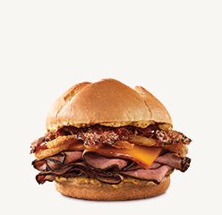
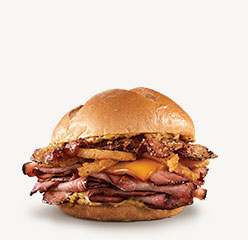
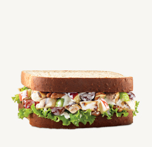
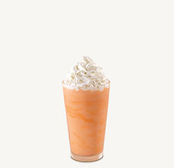

Limited-Time Offers




Yummsy Fast Food is a fast food restaurant started in the year 2015 and is starategically placed in a serene environment. The view of the Nairobi CBD from our terrace is fantastic making you feel away from the daily hustles encountered.
©2016 - Yummsy Fast Food Restaurant.